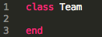
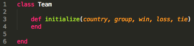
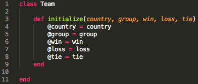
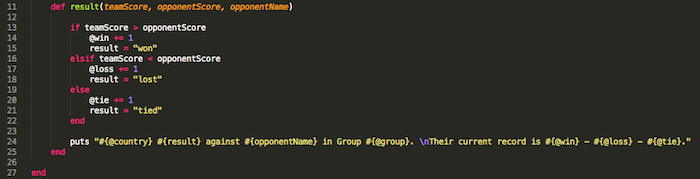
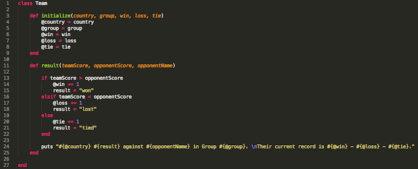
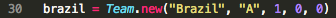
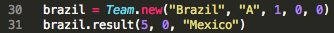
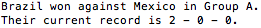

Sunday, June 15, 2014
Ruby Classes
Introduction to Ruby Classes
Classes can be used in Ruby when you need a blueprint for creating multiple objects with the same characteristics and functions.
For example, if you wanted to create objects to represent different teams playing in this year's World Cup, you could create a new class called
Team. This class could contain variables that capture the characteristics of each team, such as country, World Cup group, wins, losses and ties.
In addition to passing in variables, you could create multiple functions that could be accessed by each team. These functions are called methods in Ruby. One example for our Team class could be a
result method, which could take in the final score and give you the result.
Now that you have a basic understanding of Ruby classes, let's jump into the nitty-gritty. Today we'll review how to create your own Ruby classes, instance variables and instance methods.
Creating a New Class
Let's start by creating a new class using the example mentioned above: World Cup teams. We want to create a new class called Team.
Let's see what this would look like:

That was easy! Line 1 is where we are creating a new class named Team and line 3 is where the new class ends. All the code contained within those lines will apply to this new class. Let's work on adding some variables and methods.
Creating Instance Methods
Now that we've created the framework for a new class, we want to set up the class so that it captures five characteristics, or values, for each team: country, World Cup group, wins, losses and ties.
In order to pass these five values into an object, you have to build an
initialize method that will accept these values and assign them to variables. This
initialize method is called an instance method, which means that you would only be able to access this method when you create an instance of a class. We'll discuss this in more detail after we've finished creating our class.
Let's take a look at what the
initialize method would look like in our new class:

Lines 3-4 contain the
initialize method, which accepts five parameters: country, group, win, loss and tie.
Now that we have five parameters, we want to assign these values to variables that can be accessed within the class. This is where instance variables come in.
Instance Variables
So far, you've probably learned about local variables and global variables. In addition to these, there are two other types of variables: instance and class. Here's a quick breakdown of all four variable types:
| Variable Type |
Definition |
Name Format |
| Global Variable |
Variable that can be accessed from anywhere in a program |
$name |
| Class Variable |
Variable that can be accessed across different objects |
@@name |
| Instance Variable |
Variable that can only be accessed across methods within an object |
@name |
| Local Variable |
Variable that can only be accessed within a method |
name |
When you build a new class, instance variables and local variables will likely be the most commonly used variables. For the purpose of our
initialize method, we should use instance variables since we're planning on using the variables in other methods within the class.
Let's take a look at our class to see how instance variables would be created:

In our example, we've added five instance variable (lines 4-8) that correspond to each parameter that was passed in. This means that the value of
country has been passed into
@country, the value of
group has been passed into
@group, etc. Now that the variables have been initialized, we can move on to creating methods that use those instance variables.
Creating More Instance Methods
A class can have multiple functions or methods. We've already created the
initialize method. Now let's take the example from the introduction and create an instance method called
result that accepts a score and tells you the result of the game and the team's overall record.
Let's take a look at what this
result method would look like:

First of all, you'll notice that local variables are used in this method along with instance variables. These local variables are only available within this method and cannot be accessed by any other methods within this class.
In line 11, the
result method is being defined and three parameters are being passed in: the team's score, the opponent's score and the opponent's name. The first two parameters will be used to determine the result of the game. Lines 13-22 contain the if statement for each scenario.
Lines 13-15: If the team's score is greater than the opponent's score
the
@win instance variable will be incremented by 1 and the
result local variable will be equal to "won"
Lines 16-18: If the team's score is less than the opponent's score,
the
@loss instance variable will be incremented by 1 and the
result local variable will equal "lost"
Lines 19-21: If the team's score is not greater than or less than the opponent's score, meaning it's tied,
then the
@tie instance variable will be incremented by 1 and the
result local variable will equal "tied"
Now that we've determined the result of the game and updated the
@win, @loss, @tie variables accordingly, line 24 prints out the result of the score and the team's overall record.
Creating a New Object
So far, we've created the class but we haven't had a chance to use it to create a new object. Before we do that, take a look at the new class we've created and make sure you understand each block of code.

In order to use the methods we created within the class, we need to create an instance of this class. Instance methods, as we mentioned above, can only be accessed with an instance of the class. For example, if we wanted to access the
result method in our
Team class, we would have to create a new team.

Using the new method, we have created a new object called "brazil" using our Team class. This means that the parameters we passed in have now been assigned to the instance variables in the class: @country = "Brazil", @group = "A", @win = 1, @loss = 0 and @tie = 0.
Calling the result Method
Now that we've created this object, we can call the result method using this object. Let's pretend the Brazil-Mexico game just ended and Brazil beat Mexico by a landslide.
Ruby Code:

Result:

When we called the
result method, we passed in three values: Brazil's score (5), Mexico's score (0) and the opponent's name ("Mexico"). Using these values, the method compared the variables, incremented the
@win instance variable, set the
result local variable and printed out the final result of the game and Brazil's overall record.
Summary
Now that you have a basic understanding of Ruby classes, you can probably think of ways to build and use your own classes and methods. Try creating a class in your next program!
We've only covered the basics, so if you're interested in finding more information, check out the following resources: